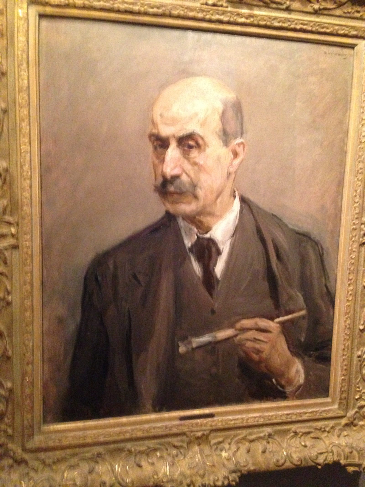

Kapitel 9 – Jøder
I Berlin går Nolde i rette med præsidenten for Berliner Secession og bliver ekskluderet. Han forholder sig generelt kritisk over for jøder og forsvarer den rene race. Senere udvikler han en såkaldt Entjudungsplan for Tyskland.